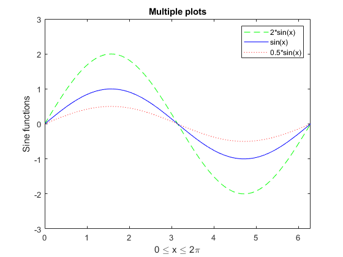
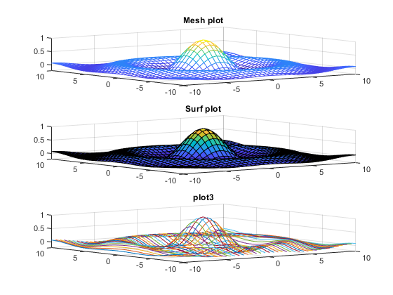
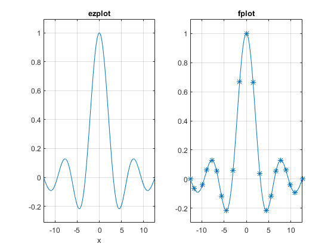

Contents
clc, clear all, close all
Give it a try (1)
x = 1/(2^2 + sqrt(3)) + 4/5;
y = sin(pi) + exp(1i* pi);
Give it a try (2)
clear all
x = linspace(0,2*pi, 201);
y1 = 2 * sin(x);
y2 = sin(x);
y3 = 0.5 * sin(x);
figure
plot(x, y1, 'g--', x,y2, 'b-', x, y3, 'r:')
xlabel('0 \leq x \leq 2\pi')
ylabel('Sine functions')
legend('2*sin(x)', 'sin(x)', '0.5*sin(x)')
title('Multiple plots')
axis([0 2*pi -3 3])

Give it a try (3)
clear all
[X, Y] = meshgrid(-10: .5 : 10);
R = sqrt(X.^2 + Y.^2)+ eps ;
Z = sin(R)./R;
figure
subplot(3,1,1)
mesh(X,Y, Z)
title('Mesh plot')
subplot(3,1,2)
surf(X,Y, Z)
title('Surf plot')
subplot(3,1,3)
plot3(X,Y, Z)
title('plot3')
grid on

Give it a try (4)
clear all
A = magic(4)
A([1,4], 3) = 0
A =
16 2 3 13
5 11 10 8
9 7 6 12
4 14 15 1
A =
16 2 0 13
5 11 10 8
9 7 6 12
4 14 0 1
Give it a try (5)
clear all
A = [ 1 2 3; 4 5 6; 7 8 0];
b = [1; 1; 1];
x = inv(A)*b
x =
-1.000000000000000
1.000000000000000
-0.000000000000000
Give it a try (6)
clear all
sym x;
x = factorial(32)-exp(100);
x_5 = vpa(x,5)
x_50 = vpa(x,50)
x_5 =
-2.6881e+43
x_50 =
-26881171155030520819693839094190694069174272.0
Give it a try (7)
clear all
figure
subplot(1,2,1)
ezplot('sin(x)/x',[-4*pi 4*pi]);
title('ezplot')
grid on
subplot(1,2,2)
fplot(@(y) sin(y)./y,'-*')
title('fplot')
axis([-4*pi 4*pi -.3 1.1 ])
grid on

Give-it-a-try (8)
grade = input('Enter your grade:\n');
if grade >= 50
fprintf('Congraulations, you passed!')
else
fprintf('I am sorry, You faild!')
end
Error using input
Cannot call INPUT from EVALC.
Error in Give_it_a_try (line 91)
grade = input('Enter your grade:\n');
Give-it-a-try (9)
clear all
m = input('Enter the number of rows \n');
n = input('Enter the number of coumns \n');
A = rand(m,n);
sum = 0;
for i = 1:m
for j = 1:n
sum = sum + A(i,j);
end
end
fprintf('The total sum is %g\n',sum)